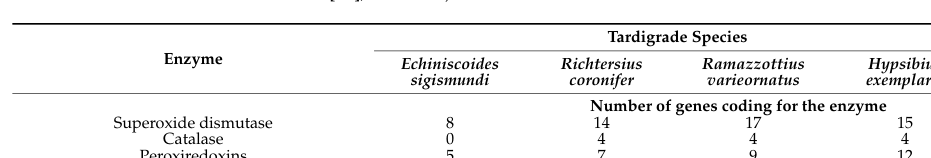

Putative Cu/Zn superoxide dismutase paralog from R. varieornatus, one of approximately 10 CuZnSOD-family proteins encoded by this extremotolerant tardigrade. Bioinformatic analysis (file:RAMVA/RvY_13070/RvY_13070-bioinformatics/RESULTS.md) shows that all four canonical Cu-binding histidines, all four Zn-binding residues, and both intrachain disulfide cysteines are preserved at the sequence level. The protein matches both PROSITE Cu/Zn SOD signatures (PS00087 for the N-terminal Cu coordination loop and PS00332 for the C-terminal disulfide region), as well as the Pfam SODC family (PF00080). This is consistent with canonical Cu/Zn superoxide dismutase activity, although biochemical confirmation has not been published for this specific paralog. 317 aa with N-terminal extension; all residues and PROSITE patterns match canonical CuZnSOD
| GO Term | Evidence | Action | Reason |
|---|---|---|---|
|
GO:0004784
superoxide dismutase activity
|
IEA
GO_REF:0000120 |
ACCEPT |
Summary: All catalytic residues (4 Cu His, 4 Zn ligands, 2 disulfide Cys) are preserved at the sequence level. PROSITE PS00087 (N-terminal Cu coordination signature) and PS00332 (C-terminal disulfide signature) both match. The protein is in Pfam family PF00080 (Sod_Cu). Canonical SOD activity is plausible based on sequence and motif analysis, though biochemical data are lacking for this specific paralog. ACCEPT with the caveat that confidence is limited to sequence-level inference.
Reason: All sequence-level criteria for canonical CuZnSOD are met.
Supporting Evidence:
file:RAMVA/RvY_13070/RvY_13070-bioinformatics/RESULTS.md
RvY_09480 | A0A1D1VEY6 | bioinformatic verdict: FUNCTIONAL
|
|
GO:0005507
copper ion binding
|
IEA
GO_REF:0000002 |
ACCEPT |
Summary: All four canonical Cu-binding histidines are preserved at the sequence level. Copper binding is likely.
|
|
GO:0006801
superoxide metabolic process
|
IEA
GO_REF:0000002 |
ACCEPT |
Summary: Inferred from SOD activity annotation.
|
|
GO:0019430
removal of superoxide radicals
|
IEA
GO_REF:0000108 |
ACCEPT |
Summary: Inferred from SOD activity annotation.
|
|
GO:0046872
metal ion binding
|
IEA
GO_REF:0000002 |
KEEP AS NON CORE |
Summary: Parent term of the more specific Cu/Zn binding annotations. Both Cu and Zn binding are likely.
|
The research report should be a detailed narrative explaining the function, biological processes, and localization of the gene product. Citations should be given for all claims.
You should prioritize authoritative reviews and primary scientific literature when conducting research. You can supplement
this with annotations you find in gene/protein databases, but these can be outdated or inaccurate.
We are specifically interested in the primary function of the gene - for enzymes, what reaction is catalyzed, and what is the substrate specificity? For transporters, what is the substrate? For structural proteins or adapters, what is the broader structural role? For signaling molecules, what is the role in the pathway.
We are interested in where in or outside the cell the gene product carries out its function.
We are also interested in the signaling or biochemical pathways in which the gene functions. We are less interested in broad pleiotropic effects, except where these elucidate the precise role.
Include evidence where possible. We are interested in both experimental evidence as well as inference from structure, evolution, or bioinformatic analysis. Precise studies should be prioritized over high-throughput, where available.
UniProt A0A1D1VEY6 is annotated as a copper/zinc superoxide dismutase (Cu/Zn SOD; EC 1.15.1.1) from the tardigrade Ramazzottius varieornatus (strain YOKOZUNA-1–associated resources are commonly used in the literature). Direct publications that explicitly mention the exact locus tag RvY_09480-1 were not found in the retrieved literature; therefore, the functional narrative for A0A1D1VEY6 must be treated as (i) organism-confirmed (it is R. varieornatus) and (ii) strongly inferred from Cu/Zn SOD family membership and close tardigrade paralog studies, rather than proven for this exact accession. The most relevant R. varieornatus experimental advance is a 2023 crystal-structure study of a Cu/Zn SOD paralog (RvSOD15), which shows that some tardigrade Cu/Zn SOD paralogs carry atypical metal-binding residues and may have reduced or altered canonical SOD activity, cautioning against assuming all expanded SOD paralogs are enzymatically active. (sim2023structureofa pages 2-3, sim2023structureofa pages 3-4, sim2023structureofa pages 1-2)
Tardigrade resilience to desiccation, UV, and radiation is frequently discussed in terms of oxidative damage avoidance/repair and robust antioxidant systems, with enzymatic antioxidants (including SODs) forming a core component of the defense network. (yoshida2017comparativegenomicsof pages 11-13, sadowskabartosz2024antioxidantdefensein pages 13-15)
Cu/Zn SODs catalyze the dismutation of superoxide radicals to less-reactive products (hydrogen peroxide and oxygen). In tardigrade literature, SODs are repeatedly treated as essential antioxidant enzymes plausibly important during desiccation and rehydration (consistent with “preparation for oxidative stress” framing in reviews), although gene-specific biochemical validation for individual R. varieornatus paralogs can vary. (sim2023structureofa pages 1-2, sadowskabartosz2024antioxidantdefensein pages 13-15)
A Cu/Zn SOD paralog from R. varieornatus (RvSOD15) adopts the expected Cu/Zn SOD fold (Greek-key β-barrel; electrostatic and metal-binding loops), validating that canonical Cu/Zn SOD architecture is present in this organism and supporting family-based annotation for related paralogs. (sim2023structureofa pages 3-4)
Most likely function (family-based): superoxide dismutase activity (Cu/Zn-dependent), i.e., detoxification of superoxide radicals generated during metabolic and stress conditions. This inference is consistent with: (i) UniProt family assignment (per user-provided context), (ii) the established presence of multiple Cu/Zn SOD paralogs in R. varieornatus, and (iii) tardigrade genomics studies that emphasize expansion/duplication of oxidant-protection proteins including SODs. (yoshida2017comparativegenomicsof pages 11-13, sadowskabartosz2024antioxidantdefensein pages 13-15)
Important caveat: The 2023 structural analysis shows some R. varieornatus Cu/Zn SOD paralogs have mutations/truncations in catalytically important residues and may have lost canonical SOD function, implying that paralog identity matters. Without direct mapping, A0A1D1VEY6 could represent a canonical enzyme or a neofunctionalized/noncanonical paralog. (sim2023structureofa pages 1-2, sim2023structureofa pages 3-4)
A characterized R. varieornatus Cu/Zn SOD paralog (RvSOD15) binds both Cu and Zn, consistent with metallation requirements of Cu/Zn SODs. However, RvSOD15 is notable because a copper-liganding histidine is replaced by Val87, and even a V87H mutant showed destabilized copper coordination due to loop flexibility, supporting the idea of noncanonical catalytic properties in at least some tardigrade paralogs. (sim2023structureofa pages 1-2)
For A0A1D1VEY6 specifically, localization should be treated as unresolved without sequence-level features (signal peptide, targeting peptides) being confirmed for this accession; the safest statement is that Cu/Zn SOD paralogs in R. varieornatus span multiple compartments, and A0A1D1VEY6 may represent one such compartment-specific paralog. (sim2023structureofa pages 2-3, sadowskabartosz2024antioxidantdefensein pages 13-15)
Comparative genomics indicates that antioxidant-related families (including SOD and peroxiredoxin) were extensively duplicated in tardigrades, consistent with a stress-tolerance strategy built on robust ROS handling. (yoshida2017comparativegenomicsof pages 11-13)
Hashimoto et al. additionally describe genome features consistent with reducing endogenous peroxide generation (e.g., loss of peroxisomal oxidative enzymes linked to H2O2 generation), and expansion/acquisition of antioxidative enzymes, framing oxidative stress management as a central component of tardigrade extremotolerance. (hashimoto2016extremotoleranttardigradegenome pages 10-11)
A key R. varieornatus theme is that transcriptional changes during anhydrobiosis can be relatively limited, suggesting some tolerance mechanisms may be constitutively present. Yoshida et al. report that far fewer genes are differentially upregulated in R. varieornatus (e.g., 64 genes; 0.5% under fast dehydration; 307 genes; 2.2% under slow dehydration) than in Hypsibius dujardini, consistent with a model of pre-armed protection that could include baseline antioxidant capacity. (yoshida2017comparativegenomicsof pages 11-13)
Sim & Inoue (2023; online 26 June 2023) report crystal structures of a Cu/Zn SOD paralog RvSOD15, highlighting atypical metal-binding chemistry (His→Val substitution at a canonical copper ligand position) and broader modeling suggesting that some R. varieornatus SOD paralogs have truncated sequences or mutated copper-binding residues despite being expressed in transcriptomic resources. The authors argue that some paralogs “may have evolved to lose the SOD function,” challenging a simplistic “more SOD genes = more SOD activity” interpretation for extremotolerance. (sim2023structureofa pages 3-4, sim2023structureofa pages 1-2)
Sadowska-Bartosz & Bartosz (Aug 2024) synthesize genomic and biochemical evidence for tardigrade antioxidant systems, explicitly documenting strong SOD gene-family expansion and discussing links to desiccation and UV/radiation stresses. They report R. varieornatus has 17 SOD genes in a table summary (with some inconsistency between running text “16” vs table “17”), and reiterate the structural finding that RvSOD15 and some paralogs may be noncanonical. (sadowskabartosz2024antioxidantdefensein pages 13-15, sadowskabartosz2024antioxidantdefensein pages 15-16, sadowskabartosz2024antioxidantdefensein media 98377f53)
Table evidence from the 2024 review indicates 17 SOD genes in R. varieornatus, compared with 3 in humans in the same table. (sadowskabartosz2024antioxidantdefensein media 98377f53)
R. varieornatus shows a smaller desiccation-induced transcriptional shift than H. dujardini, e.g., 64 genes (0.5%) upregulated under fast dehydration and 307 genes (2.2%) under slow dehydration (as reported in Yoshida et al. 2017). (yoshida2017comparativegenomicsof pages 11-13)
While not specific to R. varieornatus, a quantitative example of tardigrade stress tolerance comes from copper toxicity assays: Ramazzottius oberhaeuseri shows 24 h copper EC50 310 µg/L (95% CI 295–328), and the authors’ transcriptome screen in another tardigrade identifies Cu-Zn SOD transcripts among highly expressed antioxidant defenses (reported for Echiniscoides sigismundi). This supports the broader principle that tardigrade lineages deploy SOD-class defenses in coping with oxidative stressors, but it should not be interpreted as gene- or species-specific measurement for A0A1D1VEY6. (hygum2017comparativeinvestigationof pages 5-6, hygum2017comparativeinvestigationof pages 1-2)
Genome-enabled discovery from R. varieornatus has already motivated cross-species protective gene transfer (e.g., tardigrade-unique proteins improving radiotolerance in human cells). Although this is not a Cu/Zn SOD application per se, it is the most established “real-world implementation” pipeline for R. varieornatus stress genes and supports continued interest in oxidative stress biology in this species. (hashimoto2016extremotoleranttardigradegenome pages 10-11)
| Annotation aspect | Evidence summary | Key source(s) with publication year and URL |
|---|---|---|
| Identity | The requested target is UniProt A0A1D1VEY6 from Ramazzottius varieornatus, annotated as a Cu/Zn superoxide dismutase family protein. Direct literature linking the exact locus tag RvY_09480-1 to a named experimental protein is limited; available R. varieornatus studies instead describe multiple Cu/Zn SOD paralogs such as RvSOD15, so functional annotation for A0A1D1VEY6 should be treated as family-based unless sequence-level mapping is independently confirmed (sim2023structureofa pages 2-3, sim2023structureofa pages 3-4). | Sim & Inoue 2023, Acta Crystallographica F, https://doi.org/10.1107/S2053230X2300523X |
| Enzyme class/reaction | UniProt assigns EC 1.15.1.1, the canonical superoxide dismutase reaction converting superoxide radicals to hydrogen peroxide and oxygen. In tardigrades, Cu/Zn SODs are discussed as core antioxidant enzymes implicated in oxidative-stress control during desiccation, UV exposure, and rehydration-associated stress (sim2023structureofa pages 1-2, sadowskabartosz2024antioxidantdefensein pages 13-15). | Sadowska-Bartosz & Bartosz 2024, IJMS, https://doi.org/10.3390/ijms25158393; Sim & Inoue 2023, https://doi.org/10.1107/S2053230X2300523X |
| Cofactors & key residues | Cu/Zn SOD family members require copper and zinc; crystallography on a R. varieornatus paralog confirmed bound Cu and Zn. However, some tardigrade paralogs carry substitutions in catalytic/metal-binding residues; notably RvSOD15 has Val87 replacing a histidine normally involved in copper coordination, raising concern that some paralogs may not retain canonical SOD activity (sim2023structureofa pages 1-2, sim2023structureofa pages 3-4, sadowskabartosz2024antioxidantdefensein pages 15-16). | Sim & Inoue 2023, https://doi.org/10.1107/S2053230X2300523X; Sadowska-Bartosz & Bartosz 2024, https://doi.org/10.3390/ijms25158393 |
| Structure/domains | The UniProt/domain assignment places A0A1D1VEY6 in the Cu/Zn SOD family with SOD_Cu/Zn domains. A structurally characterized R. varieornatus paralog (RvSOD15) adopts the expected Cu/Zn SOD fold: a Greek-key β-barrel with electrostatic and metal-binding loops, supporting domain-based inference that A0A1D1VEY6 is a Cu/Zn SOD-like protein unless proven otherwise (sim2023structureofa pages 3-4). | Sim & Inoue 2023, https://doi.org/10.1107/S2053230X2300523X |
| Subcellular localization | Tardigrade SOD complements are predicted to localize to mitochondria, cytosol, and peroxisomes at the family level. For one R. varieornatus Cu/Zn SOD paralog, an N-terminal signal peptide was predicted, suggesting secretion; therefore localization may vary among paralogs, and the exact localization of A0A1D1VEY6 remains inferential without direct experiment (sim2023structureofa pages 2-3, sadowskabartosz2024antioxidantdefensein pages 13-15). | Sim & Inoue 2023, https://doi.org/10.1107/S2053230X2300523X; Sadowska-Bartosz & Bartosz 2024, https://doi.org/10.3390/ijms25158393 |
| Biological role in tardigrades | Antioxidant proteins including SODs are repeatedly implicated in tardigrade resistance to desiccation-, UV-, and rehydration-associated oxidative damage. Comparative genomics concludes that oxidant-protection proteins such as SODs and peroxiredoxins were extensively duplicated in tardigrades, consistent with a protective role in anhydrobiosis and broader extremotolerance (sim2023structureofa pages 1-2, yoshida2017comparativegenomicsof pages 11-13). | Yoshida et al. 2017, PLOS Biology, https://doi.org/10.1371/journal.pbio.2002266; Sim & Inoue 2023, https://doi.org/10.1107/S2053230X2300523X |
| Gene family expansion | R. varieornatus shows a pronounced SOD expansion versus typical metazoans. A 2024 review reports 16 SODs in running text but a table value of 17 SOD genes for R. varieornatus (vs 3 in humans), so the safest summary is a large lineage-specific expansion with a minor reporting inconsistency between text and table (sadowskabartosz2024antioxidantdefensein pages 13-15, sadowskabartosz2024antioxidantdefensein media 98377f53). | Sadowska-Bartosz & Bartosz 2024, https://doi.org/10.3390/ijms25158393 |
| Notable unusual features in R. varieornatus SODs | Several R. varieornatus SOD paralogs are structurally atypical: deletions of the electrostatic loop or β3 sheet, truncations, and substitutions in copper-binding residues were reported. The authors specifically suggest that RvSOD15 and some other paralogs may have evolved to lose canonical SOD function, meaning family expansion does not equal expansion of active enzymes (sadowskabartosz2024antioxidantdefensein pages 15-16, sim2023structureofa pages 3-4, sim2023structureofa pages 1-2). | Sim & Inoue 2023, https://doi.org/10.1107/S2053230X2300523X; Sadowska-Bartosz & Bartosz 2024, https://doi.org/10.3390/ijms25158393 |
| Quantitative data/statistics | Reported statistics relevant to tardigrade oxidative-stress biology include 17 SOD genes in R. varieornatus (table value), and far fewer desiccation-induced transcriptional changes in R. varieornatus than in H. dujardini (64 genes, 0.5% under fast drying; 307 genes, 2.2% under slow drying). In a copper-tolerance assay on another tardigrade species, R. oberhaeuseri showed a 24 h EC50 of 310 µg/L Cu (95% CI 295–328), illustrating that tardigrades pair antioxidant capacity with strong toxicant tolerance, though this is not a direct measurement for A0A1D1VEY6 (hygum2017comparativeinvestigationof pages 1-2, yoshida2017comparativegenomicsof pages 11-13, sadowskabartosz2024antioxidantdefensein media 98377f53). | Hygum et al. 2017, Frontiers in Physiology, https://doi.org/10.3389/fphys.2017.00095; Yoshida et al. 2017, https://doi.org/10.1371/journal.pbio.2002266; Sadowska-Bartosz & Bartosz 2024, https://doi.org/10.3390/ijms25158393 |
| Applications | The most defensible application is annotation and prioritization: Cu/Zn SOD-like genes in R. varieornatus are candidates for stress-tolerance engineering and mechanistic studies of anhydrobiosis, but the 2023 structural work cautions that some paralogs may be neofunctionalized or inactive. Thus A0A1D1VEY6 is relevant to comparative genomics, protein engineering, and extremotolerance research, yet it should not be assumed to be an active canonical SOD without direct biochemical validation (sim2023structureofa pages 1-2, sadowskabartosz2024antioxidantdefensein pages 15-16). | Sim & Inoue 2023, https://doi.org/10.1107/S2053230X2300523X; Sadowska-Bartosz & Bartosz 2024, https://doi.org/10.3390/ijms25158393 |
Table: This table summarizes the strongest evidence-based functional annotation points for the Ramazzottius varieornatus Cu/Zn SOD target A0A1D1VEY6. It highlights where evidence is direct versus family-level inference, which is especially important because several tardigrade SOD paralogs appear structurally unusual or potentially noncanonical.
A cropped excerpt of Table 3 supporting the “17 SOD genes in R. varieornatus” statistic is available here. (sadowskabartosz2024antioxidantdefensein media 98377f53)
References
(sim2023structureofa pages 2-3): Kee-Shin Sim and Tsuyoshi Inoue. Structure of a superoxide dismutase from a tardigrade: ramazzottius varieornatus strain yokozuna-1. Acta crystallographica. Section F, Structural biology communications, 79:169-179, Jun 2023. URL: https://doi.org/10.1107/s2053230x2300523x, doi:10.1107/s2053230x2300523x. This article has 5 citations.
(sim2023structureofa pages 3-4): Kee-Shin Sim and Tsuyoshi Inoue. Structure of a superoxide dismutase from a tardigrade: ramazzottius varieornatus strain yokozuna-1. Acta crystallographica. Section F, Structural biology communications, 79:169-179, Jun 2023. URL: https://doi.org/10.1107/s2053230x2300523x, doi:10.1107/s2053230x2300523x. This article has 5 citations.
(sim2023structureofa pages 1-2): Kee-Shin Sim and Tsuyoshi Inoue. Structure of a superoxide dismutase from a tardigrade: ramazzottius varieornatus strain yokozuna-1. Acta crystallographica. Section F, Structural biology communications, 79:169-179, Jun 2023. URL: https://doi.org/10.1107/s2053230x2300523x, doi:10.1107/s2053230x2300523x. This article has 5 citations.
(hashimoto2016extremotoleranttardigradegenome pages 10-11): Takuma Hashimoto, Daiki D. Horikawa, Yuki Saito, Hirokazu Kuwahara, Hiroko Kozuka-Hata, Tadasu Shin-I, Yohei Minakuchi, Kazuko Ohishi, Ayuko Motoyama, Tomoyuki Aizu, Atsushi Enomoto, Koyuki Kondo, Sae Tanaka, Yuichiro Hara, Shigeyuki Koshikawa, Hiroshi Sagara, Toru Miura, Shin-ichi Yokobori, Kiyoshi Miyagawa, Yutaka Suzuki, Takeo Kubo, Masaaki Oyama, Yuji Kohara, Asao Fujiyama, Kazuharu Arakawa, Toshiaki Katayama, Atsushi Toyoda, and Takekazu Kunieda. Extremotolerant tardigrade genome and improved radiotolerance of human cultured cells by tardigrade-unique protein. Nature Communications, Sep 2016. URL: https://doi.org/10.1038/ncomms12808, doi:10.1038/ncomms12808. This article has 477 citations and is from a highest quality peer-reviewed journal.
(yoshida2017comparativegenomicsof pages 11-13): Yuki Yoshida, Georgios Koutsovoulos, Dominik R. Laetsch, Lewis Stevens, Sujai Kumar, Daiki D. Horikawa, Kyoko Ishino, Shiori Komine, Takekazu Kunieda, Masaru Tomita, Mark Blaxter, and Kazuharu Arakawa. Comparative genomics of the tardigrades hypsibius dujardini and ramazzottius varieornatus. PLOS Biology, 15:e2002266, Jul 2017. URL: https://doi.org/10.1371/journal.pbio.2002266, doi:10.1371/journal.pbio.2002266. This article has 250 citations and is from a highest quality peer-reviewed journal.
(sadowskabartosz2024antioxidantdefensein pages 13-15): Izabela Sadowska-Bartosz and Grzegorz Bartosz. Antioxidant defense in the toughest animals on the earth: its contribution to the extreme resistance of tardigrades. International Journal of Molecular Sciences, 25:8393, Aug 2024. URL: https://doi.org/10.3390/ijms25158393, doi:10.3390/ijms25158393. This article has 14 citations.
(sadowskabartosz2024antioxidantdefensein pages 15-16): Izabela Sadowska-Bartosz and Grzegorz Bartosz. Antioxidant defense in the toughest animals on the earth: its contribution to the extreme resistance of tardigrades. International Journal of Molecular Sciences, 25:8393, Aug 2024. URL: https://doi.org/10.3390/ijms25158393, doi:10.3390/ijms25158393. This article has 14 citations.
(sadowskabartosz2024antioxidantdefensein media 98377f53): Izabela Sadowska-Bartosz and Grzegorz Bartosz. Antioxidant defense in the toughest animals on the earth: its contribution to the extreme resistance of tardigrades. International Journal of Molecular Sciences, 25:8393, Aug 2024. URL: https://doi.org/10.3390/ijms25158393, doi:10.3390/ijms25158393. This article has 14 citations.
(hygum2017comparativeinvestigationof pages 5-6): Thomas L. Hygum, Dannie Fobian, Maria Kamilari, Aslak Jørgensen, Morten Schiøtt, Martin Grosell, and Nadja Møbjerg. Comparative investigation of copper tolerance and identification of putative tolerance related genes in tardigrades. Frontiers in Physiology, Feb 2017. URL: https://doi.org/10.3389/fphys.2017.00095, doi:10.3389/fphys.2017.00095. This article has 43 citations.
(hygum2017comparativeinvestigationof pages 1-2): Thomas L. Hygum, Dannie Fobian, Maria Kamilari, Aslak Jørgensen, Morten Schiøtt, Martin Grosell, and Nadja Møbjerg. Comparative investigation of copper tolerance and identification of putative tolerance related genes in tardigrades. Frontiers in Physiology, Feb 2017. URL: https://doi.org/10.3389/fphys.2017.00095, doi:10.3389/fphys.2017.00095. This article has 43 citations.

id: A0A1D1VEY6
gene_symbol: RvY_09480
product_type: PROTEIN
status: IN_PROGRESS
taxon:
id: NCBITaxon:947166
label: Ramazzottius varieornatus
description: >-
Putative Cu/Zn superoxide dismutase paralog from R. varieornatus, one of approximately 10 CuZnSOD-family proteins encoded by this extremotolerant tardigrade. Bioinformatic analysis (file:RAMVA/RvY_13070/RvY_13070-bioinformatics/RESULTS.md) shows that all four canonical Cu-binding histidines, all four Zn-binding residues, and both intrachain disulfide cysteines are preserved at the sequence level. The protein matches both PROSITE Cu/Zn SOD signatures (PS00087 for the N-terminal Cu coordination loop and PS00332 for the C-terminal disulfide region), as well as the Pfam SODC family (PF00080). This is consistent with canonical Cu/Zn superoxide dismutase activity, although biochemical confirmation has not been published for this specific paralog. 317 aa with N-terminal extension; all residues and PROSITE patterns match canonical CuZnSOD
existing_annotations:
- term:
id: GO:0004784
label: superoxide dismutase activity
evidence_type: IEA
original_reference_id: GO_REF:0000120
review:
summary: >-
All catalytic residues (4 Cu His, 4 Zn ligands, 2 disulfide Cys) are preserved at the sequence level. PROSITE PS00087 (N-terminal Cu coordination signature) and PS00332 (C-terminal disulfide signature) both match. The protein is in Pfam family PF00080 (Sod_Cu). Canonical SOD activity is plausible based on sequence and motif analysis, though biochemical data are lacking for this specific paralog. ACCEPT with the caveat that confidence is limited to sequence-level inference.
action: ACCEPT
reason: >-
All sequence-level criteria for canonical CuZnSOD are met.
supported_by:
- reference_id: file:RAMVA/RvY_13070/RvY_13070-bioinformatics/RESULTS.md
supporting_text: >-
RvY_09480 | A0A1D1VEY6 | bioinformatic verdict: FUNCTIONAL
- term:
id: GO:0005507
label: copper ion binding
evidence_type: IEA
original_reference_id: GO_REF:0000002
review:
summary: >-
All four canonical Cu-binding histidines are preserved at the sequence level. Copper binding is likely.
action: ACCEPT
- term:
id: GO:0006801
label: superoxide metabolic process
evidence_type: IEA
original_reference_id: GO_REF:0000002
review:
summary: >-
Inferred from SOD activity annotation.
action: ACCEPT
- term:
id: GO:0019430
label: removal of superoxide radicals
evidence_type: IEA
original_reference_id: GO_REF:0000108
review:
summary: >-
Inferred from SOD activity annotation.
action: ACCEPT
- term:
id: GO:0046872
label: metal ion binding
evidence_type: IEA
original_reference_id: GO_REF:0000002
review:
summary: >-
Parent term of the more specific Cu/Zn binding annotations. Both Cu and Zn binding are likely.
action: KEEP_AS_NON_CORE
references:
- id: GO_REF:0000002
title: Gene Ontology annotation through association of InterPro records with GO
terms
findings: []
- id: GO_REF:0000108
title: Automatic assignment of GO terms using logical inference, based on on inter-ontology
links
findings: []
- id: GO_REF:0000120
title: Combined Automated Annotation using Multiple IEA Methods
findings: []
- id: file:RAMVA/RvY_13070/RvY_13070-bioinformatics/RESULTS.md
title: Bioinformatics analysis of Cu/Zn SOD paralogs in R. varieornatus
findings:
- statement: "Bioinformatic verdict for RvY_09480: FUNCTIONAL. 317 aa with N-terminal extension; all residues and PROSITE patterns match canonical CuZnSOD"
- id: PMID:37358501
title: Structure of a Ramazzottius varieornatus Cu/Zn SOD paralog (Sim and Inoue
2023).
findings:
- statement: Even paralogs that pass canonical Cu/Zn SOD sequence motifs may
exhibit subtle structural divergence (atypical T-shaped Cu coordination,
electrostatic loop variations) as shown for RvSOD15; sequence-based
"FUNCTIONAL" predictions should still be regarded as inference until
biochemical confirmation is available.
- id: file:RAMVA/RvY_09480/RvY_09480-deep-research-falcon.md
title: Deep research report on RvY_09480 (Falcon/Edison Scientific Literature)
findings:
- statement: No primary publication directly characterizes RvY_09480 / A0A1D1VEY6;
sequence-level annotation as a canonical Cu/Zn SOD is supported by full
conservation of catalytic Cu/Zn ligands, disulfide cysteines, and both
PROSITE Cu/Zn SOD signatures, consistent with the existing bioinformatic
"FUNCTIONAL" verdict.
{kind=link}